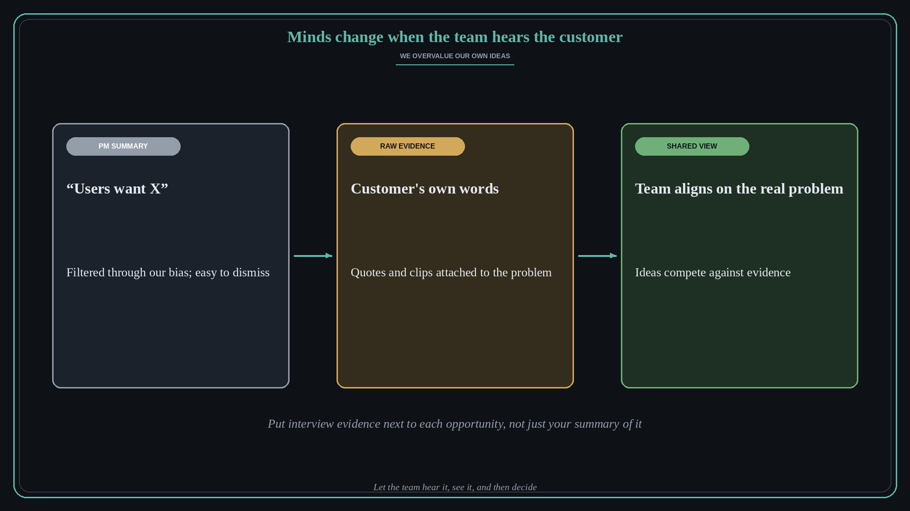

Minds change when the team hears the customer
Source: Teresa Torres (@ttorres)
original post
What it claims
Product management has one stubborn bias: we overvalue our own ideas about what to build next. Minds rarely change until teams hear customers describe the problem in their own words. Putting interview evidence directly on the opportunity solution tree lets everyone hear it, see it, and align on what the real problems are.
Why it matters for a PO
A PO's summary of what users want is easy to argue with, because it sounds like the PO's opinion. A customer's own words are much harder to dismiss. Attaching raw evidence to each opportunity turns roadmap debates from idea against idea into idea against evidence.
3 takeaways
- Assume your favorite idea is overvalued, including by you.
- Share customers' own words and clips, not just your paraphrase of them.
- Attach evidence to each opportunity so the team can check it themselves.
Practice this week
For the top opportunity on your current roadmap, attach two or three direct customer quotes or short clips. Share them with the team before you share your proposed solution and see whether the conversation changes.